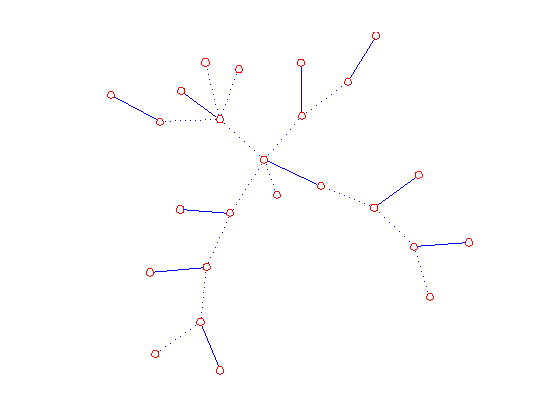

Matchings in bipartite graphs
We illustrate the use of bipmatch to find maximum matchings in bipartite graphs.
Contents
Grid graph
We begin with a 3-by-5 grid graph.
g = graph;
grid(g,3,5);
p = bipartition(g); % find the bipartion of the graph
m = bipmatch(g,p);
disp(m)
1 2
3 6
5 4
7 8
9 12
11 10
13 14
Draw the result
We create a function edraw to draw a graph with a selected set of edges solid and the remaining edges dotted.
The code for edraw is in the file edraw.m and is not part of that standard Matgraph distribution. The code is repeated here:
% function edraw(g,elist) % n = nv(g); % h = graph(n); % create a graph with same number of vertices as g % add(h,elist); % add edges in elist to h % embed(h, getxy(g)); % copy g's embedding % draw(g,':'); % draw g with dotted lines % draw(h); % overdraw h with solid lines % free(h); % release h clf;edraw(g,m);

A random tree
random_tree(g,25); distxy(g); p = bipartition(g); m = bipmatch(g,p); clf;edraw(g,m);
Optimization terminated: relative function value changing by less than OPTIONS.TolFun. Embedding score = 26.8465 Elapsed time is 3.617853 seconds.
A random bipartite graph
random_bipartite(g,8,10,.4); p = bipartition(g); m = bipmatch(g,p); clf;edraw(g,m);

Release storage
free(g)